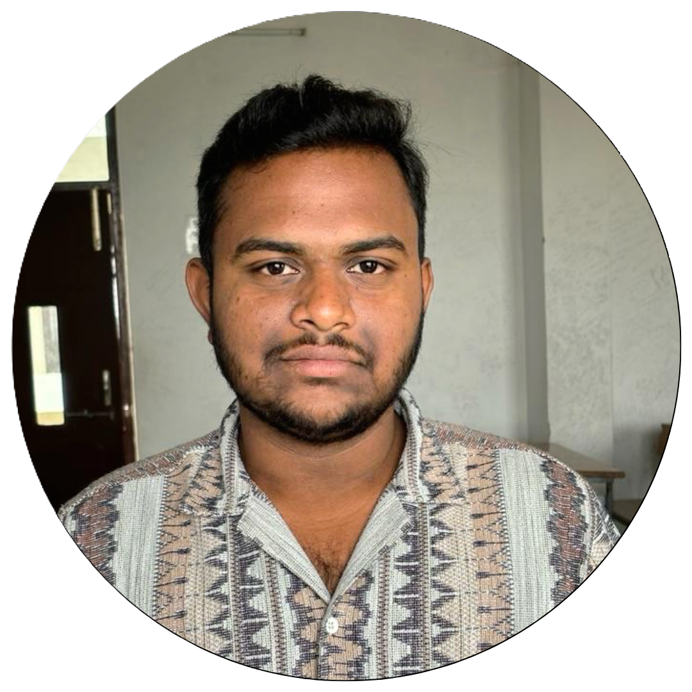
K SATHWIK REDDY
TECHNICAL TEAM
I got the chance to improve a number of abilities at the Sowparnika event that are essential for both professional and personal growth. Through communication-focused activities, I developed my ability to express myself clearly. The occasion helped me polish my presentation abilities by giving me a stage on which to boldly share my thoughts. By choosing to participate in the Prototype subject instead of just the quiz or poster, I was able to show off my skills and engage in creative thinking. All things considered, Sowparnika expanded my skill set and offered a vast and varied.
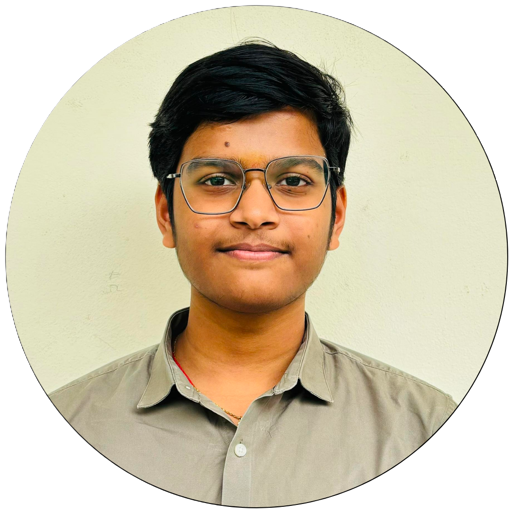
SAI DEEKSHITH
TECHNICAL TEAM
I, along with my 4-member team, developed a prototype for the event Sowparnika 2K23. Our experience was enriching as we established connections, refined the prototype, and created a detailed chart for presentation. Overcoming the challenge of explaining our prototype to judges, addressing their queries, and receiving positive feedback created a lasting and rewarding experience. This event provided a valuable platform to showcase our skills.
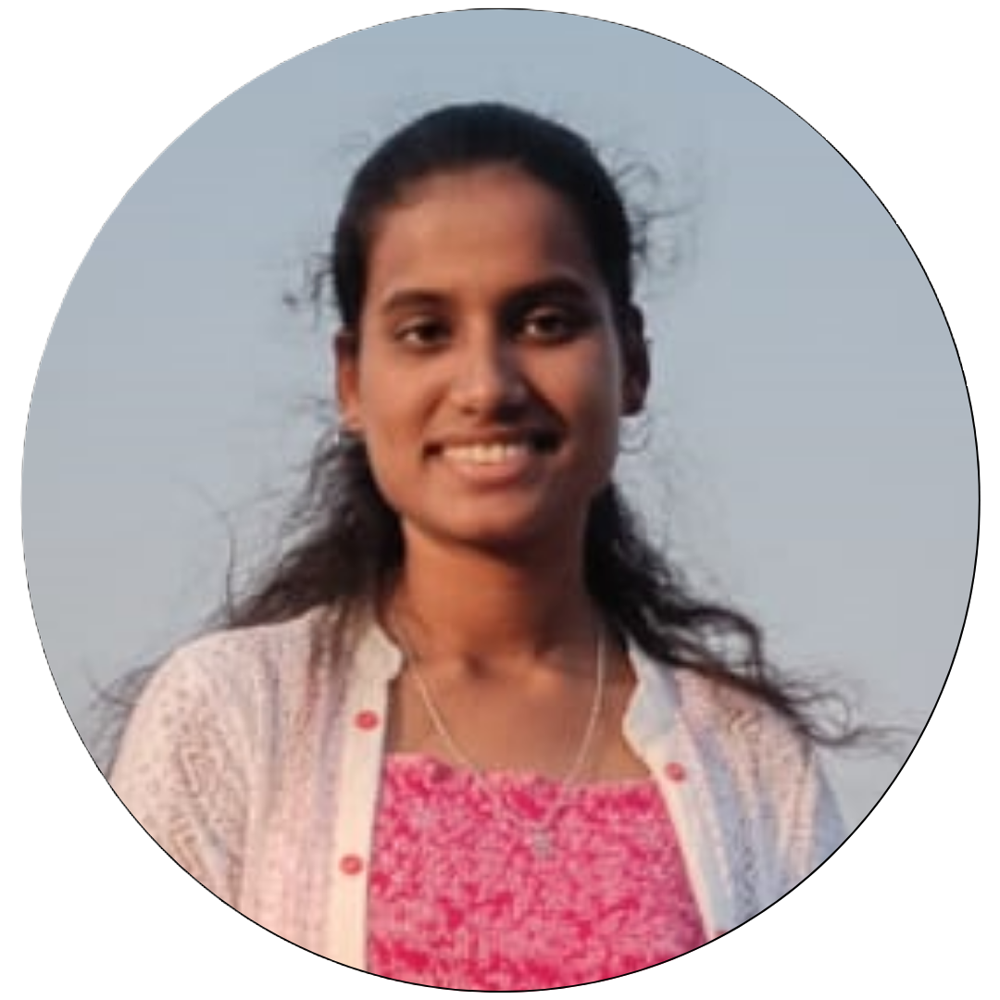
K SADHANA
IDEOLOGY TEAM
Participating in Sowparnika 2k23 Poster making proved to be a wonderful experience. Initially uncertain about my ability to collaborate and think creatively, this event became a platform for practical exploration. It was a fantastic opportunity to learn by doing. Building memorable moments with friends added to the honor of being part of this remarkable event. I feel grateful for the invaluable lessons that unfolded during the entire experience.
K NAVANEETH REDDY
MARKETING
Participating in the Sowparnika Prototype Display was an immensely gratifying experience, marking my inaugural engagement in such an event. This platform not only offered insights into science and technology but also served as a canvas for imbibing the essence of teamwork. The crowning achievement of securing a gold medal added to the joyous fervor of the occasion, affirming the dedication and collaborative spirit invested in the project. Moreover, the event served as a catalyst for augmenting our technical acumen, equipping us with invaluable knowledge in the realms of innovation and problem-solving.
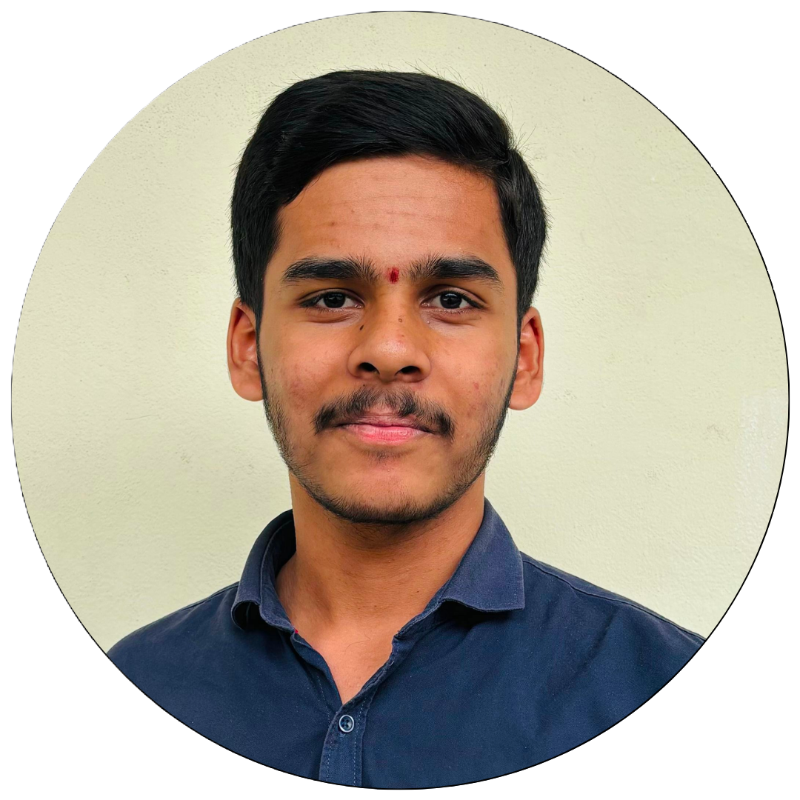
R HARSHITH KUMAR
TECHNICAL TEAM
Participating in Sowparnika 2K23, with my team of 4 members successfully developed the first working prototype. Our experience involved establishing connections, refining the prototype, and creating a comprehensive chart for presentation. Overcoming the challenge of explaining our prototype to judges and addressing their inquiries, the event left us with a lasting and rewarding experience. As a Technical Team member , it provided an excellent platform to showcase our skills and foster growth.
ROHAN MARAPALLY
REPRESENTATIVE SST
During the Sowparnika event, I had the opportunity to enhance various skills that are crucial in both personal and professional development. Engaging in activities focused on communication, I learned to articulate my thoughts effectively. The event also honed my presentation skills, providing a platform to express ideas confidently. Participating in the theme Prototype amidst options like poster and quiz, allowed me to delve into creative thinking and showcasing abilities. Overall, Sowparnika not only broadened my skill set but also provided a diverse and enriching experience.
OMKAR TAVVA
IDEOLOGY TEAM
Participating in Sowparnika 2k23 marked the highlight of my first year in BTech. The event provided a rich learning experience, allowing us to not only gain knowledge but also enjoy various aspects. Sowparnika is an excellent platform for students to showcase their passion and creativity, presenting their ideas in unique ways. Every participant exudes enthusiasm, contributing to a vibrant and innovative atmosphere. I encourage everyone to seize the opportunity offered by Sowparnika for nurturing their ideas.
K ADITHYA REDDY
DESIGNING
Participating in Sowparnika 2K23, with my team of 4 members successfully developed the first working prototype. Our experience involved establishing connections, refining the prototype, and creating a comprehensive chart for presentation. Overcoming the challenge of explaining our prototype to judges and addressing their inquiries, the event left us with a lasting and rewarding experience. As a Technical Team member , it provided an excellent platform to showcase our skills and foster growth.
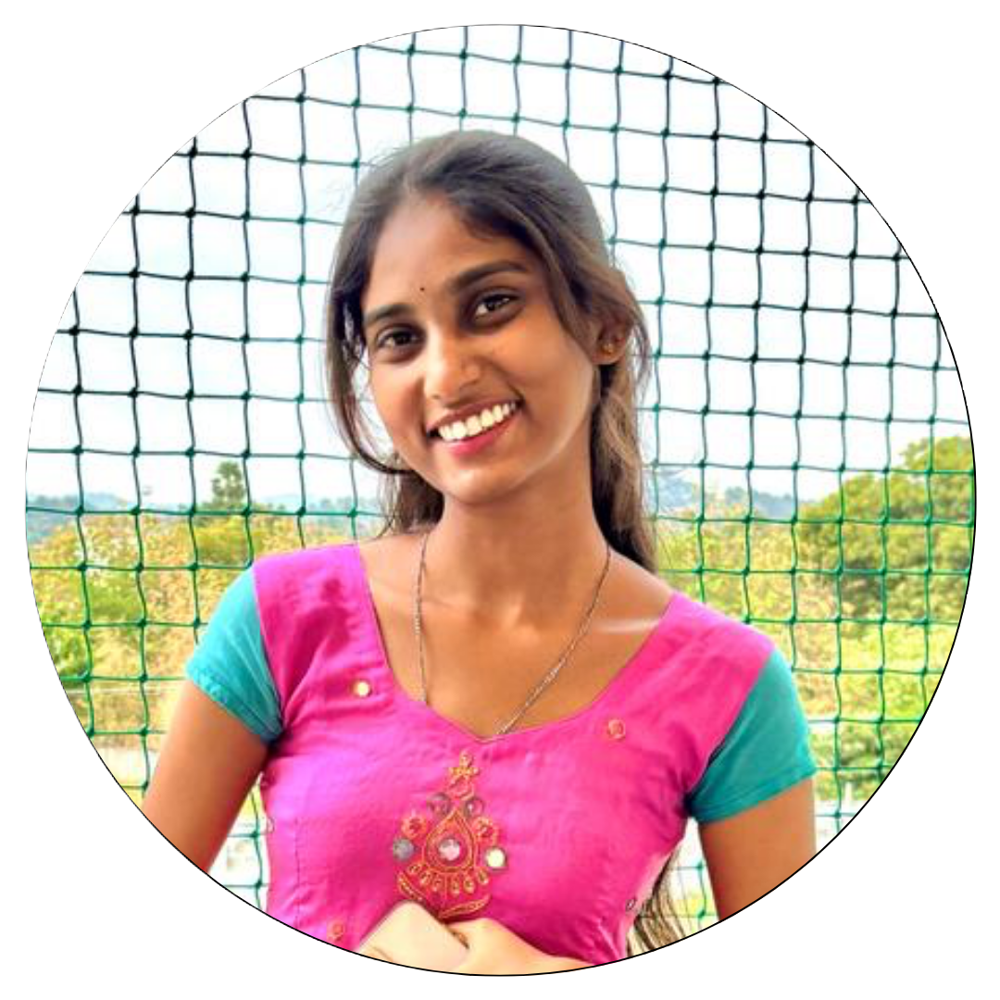
K LAKSHANYA
TECHNICAL TEAM
Participating in sowparnika 2k23 was a exciting memorable experience. Taking part poster was a such a fun and rewarding experience.It was a great way to showcase our creativity and knowledge on a specific topic. It was a great platform to overcome my fear and to develop my communication skills. It was a wonderful experience. It was a great opportunity to gain self confidence.
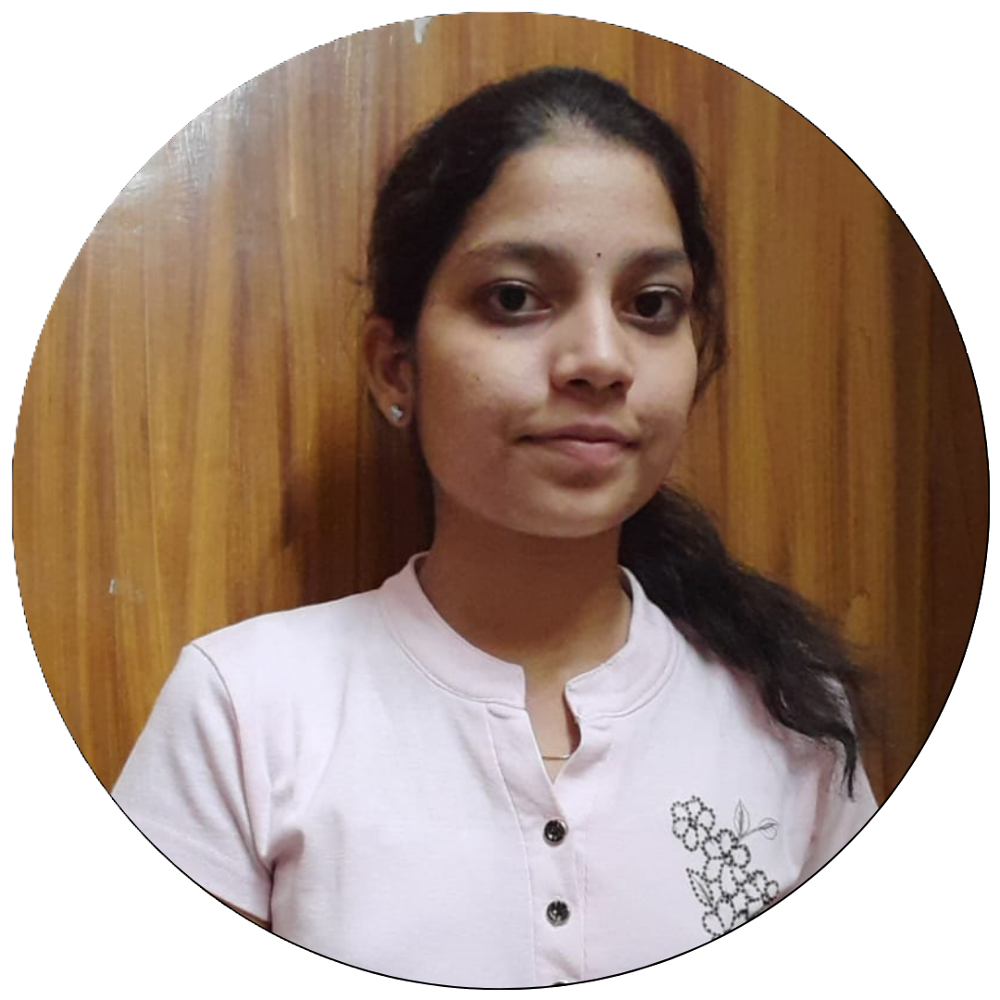
K MEGHANA
TECHNICAL TEAM
Making poster for Sowparnika 2k23 turned out to be a fantastic experience. Although I was first unsure of my capacity for teamwork and creative thought,Instead this became an excellent opportunity for me to present my work and make vital contacts with many people in the field thanks to this event.Creating treasured memories is also the privilege of taking part in this extraordinary occasion.
E V SATHVIKA
HOSPITALITY
Participating in Sowparnika 2k23 is really a very great experience and This event is a very Great platform . from being a participate to being a co-ordinator this is really a great thing .this event made me learn new things in this journey and this one of the interactive sessions to interact with many people and I am feel privileged for being a part of this amazing event.
M SUMANTH
TECHNICAL TEAM
Participating in sowparnika 2k23 was a wonderful experience and so inspiring. Sowparnika prototype was an enriching experience that got me elevated in my academic journey.I'm grateful for the platform which helped me to share and celebrate the pursuit of my knowledge. By participating in the event I got more confident about my abilities of thinking. It was a great way to learn and do things creative. It was great experience to be the part of the event. The event not only offered a platform to present the innovation but also facilitated meaningful interactive session with many people. I consider myself privileged to be the part of such significant event in my filed.
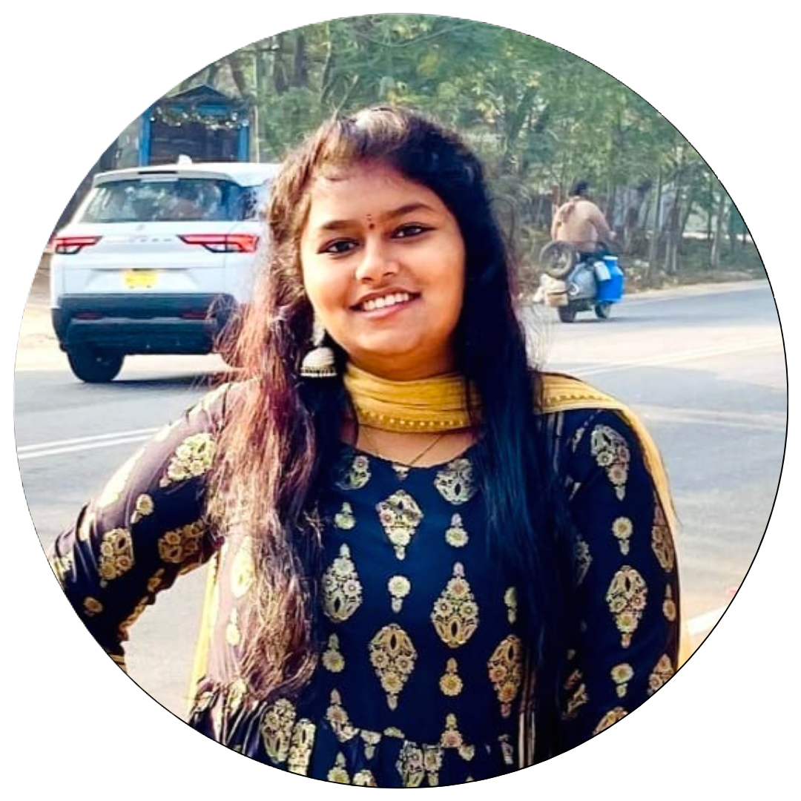
M VEDA SHREE
IDEOLOGY TEAM
Participating in sowparnika 2k23 was so inspiring .l used to think that poster making was just for art students. But then i had made poster for the event and I realized how important it is to be able to communicate complex information in a visually appealing way. i actually enjoyed poster making.Creating posters has helped me to think outside the box and to come up with new ideas. It has also helped me to improve my communication skills.I now use poster making skills to create presentations for my classes and to promote my extracurricular activities. As an engineering student, I am always looking for ways to improve my presentation skills.
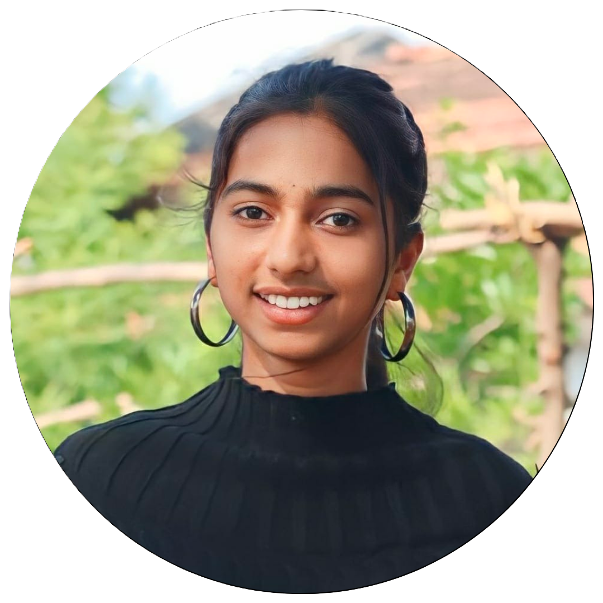
K HIMA BINDHU
DOCUMENTATION
I had a great experience taking part in Sowparnika2k23 last year. The exciting setting offered fascinating learning that has advanced my growth both personally and professionally.All of it's had a big impact because of Sowparnika's commitment to nurturing communication and collaboration. It took me an hour to be a part of such an active event, and I am thankful for the platform it offered to celebrate and share the pursuit of knowledge.
K RAVI KUMAR
TECHNICAL TEAM
Participating in the Sowparnika prototype was an enriching experience that elevated my academic journey.I'm grateful for the platform it provided to share and celebrate the pursuit of knowledge.Moreover, the event served as a catalyst for augmenting our technical acumen, equipping us with invaluable knowledge in the realms of innovation and problem-solving.Overall, this enriching experience encompassed learning through practical application, teamwork, and the acquisition of substantial technical expertise.
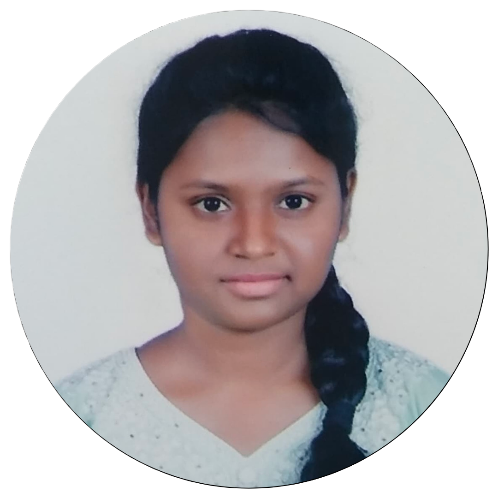
K NAVITHA
MARKETING
I had an incredible experience participating in last year's Sowparnika2k23. The dynamic atmosphere provided valuable insights that have positively impacted both my personal and professional growth .As I participated in the poster presentation,I seized the opportunity to showcase my creativity and enhance my team work abilities with various skills.I'm grateful for the chance to be part of such a well-organized and impactful event.
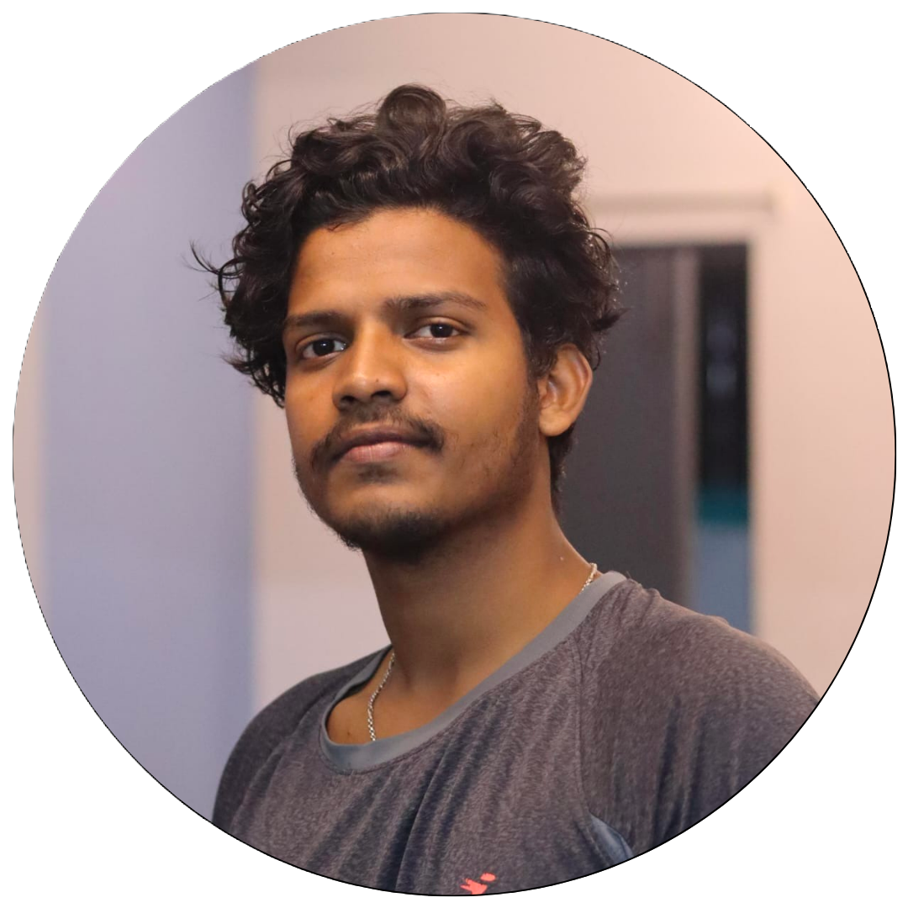
VAMSHI
HOSPITALITY
Participating in the renowned Tech Summit was a truly transformative experience that greatly bolstered my professional growth. This event provided a valuable platform for showcasing my work and fostering meaningful connections with numerous individuals in the industry. Interacting with a diverse audience and receiving constructive feedback not only elevated the quality of my work but also deepened my comprehension of the subject matter. I consider myself privileged to have been a part of such a significant event in my field.
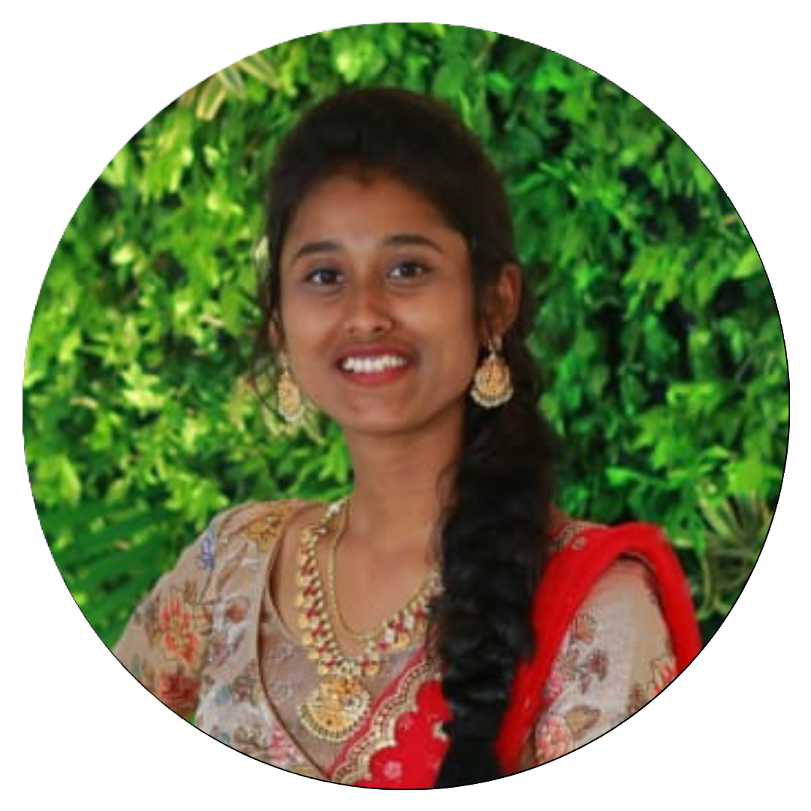
HANISHA
HOSPITALITY
Taking part in this ospcious event Sowparnika was a transformative experience that significantly enhanced my professional development. The event not only offered a platform to present my work but also facilitated meaningful interactions with many people. Engaging with a diverse audience and receiving constructive feedback further enriched my understanding of the subject matter. I feel privileged to be a part of this event.
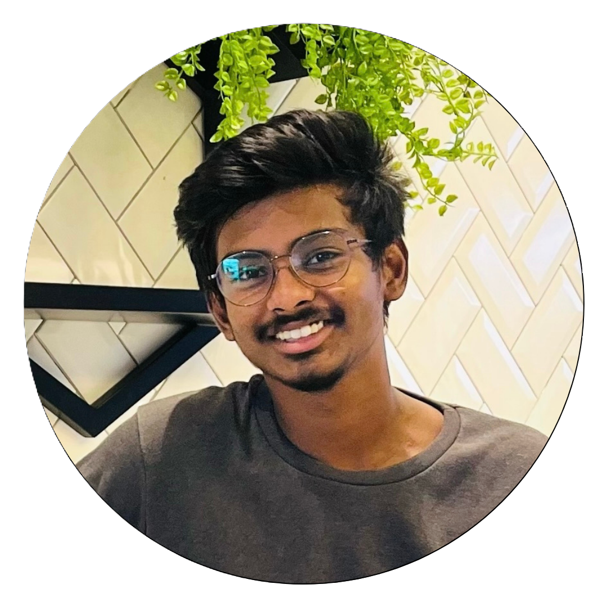
K VAIBHAV SAI
DESIGNING
Participating in the Sowparnika poster presentation was an enriching experience that elevated my academic journey. The platform not only allowed me to showcase my research but also provided a unique opportunity to engage with a diverse audience and receive valuable insights. This invaluable opportunity not only strengthened my research presentation skills but also contributed improved my speaking skills. It was an honor to be part of such an esteemed event, and I'm grateful for the platform it provided to share and celebrate the pursuit of knowledge.
ABHINAYA
DOCUMENTATION
Being a part of Sowparnika 2k23 was a great experience. I was doubtful about my abilities to co-operate and think beyond the box. But sowparnika provided a platform to explore the pratical world.It was a great way to learn and do. I created remarkable memories with my friends in this event. It was an honour to be part of this amazing event.I am grateful to the invaluable lessons I learnt thoroughout the event.